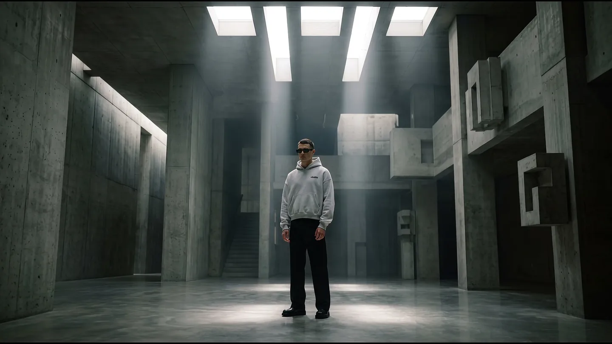

01 · The name
Everything the label makes points back at that one word. It is not a tagline written for a website. It is the idea the brand has been circling in every drop, said a different way each time.
An icon shaped by imperfect lines, bold details, and your own way of wearing it.
Instagram · 29 July 2026
02 · The comeback
The label went quiet. In April 2026 it came back, and said so without decoration.
Preparing for a lifetime.
After a long hiatus, we are back to redefine the standards. Every detail has been sharpened; every silhouette evolved.
Facebook · 18 April 2026 · #thecomeback
Heavier cloth. Boxy cuts. Blue and violet on iridescent surfaces, where there used to be magenta. The work made before that date was not deleted. It was given a name.
03 · Two eras, one label
Magenta prints, shot flat, worn on the street in Saigon. Still in stock. Still sold. Never disowned.
Heavier cloth, boxy fit, harder light. English captions, directed shoots, iridescent surfaces.
Most labels bury the old catalogue when the direction changes. This one framed it instead, in its own words: old things still shine. And left it on the shelf.
Buy from either era. The sizing is the same across both: S, M and L, unisex. Archive pieces are still stocked and still sold, on this site and on Shopee.
04 · What it is made of
The label writes its own spec sheet. Nothing below is marketing language. It is the same list that goes out with each release, in the same four lines.
05 · The record
Rating and reviews from the Shopee store · following from Instagram · figures as of August 2026
Based in Saigon · Made in Vietnam · vitalitevn@gmail.com